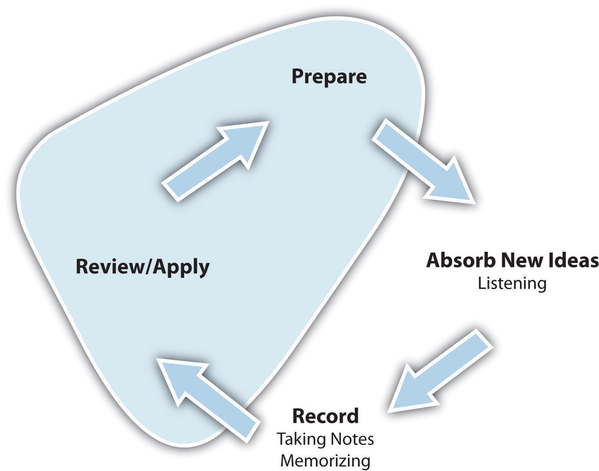

Assess your present knowledge and attitudes.
| Usually | Sometimes | Seldom | |
|---|---|---|---|
| 1. I do well on exams. | |||
| 2. Exams make me very nervous and anxious. | |||
| 3. I study for exams at the last minute. | |||
| 4. I feel confident going into tests or exams. | |||
| 5. When we get pop quizzes, I do OK. | |||
| 6. I remember what I’ve studied long after studying for an exam. | |||
| 7. I am overwhelmed by the amount of material I have to study for an exam. | |||
| 8. I run out of time when taking exams. | |||
| 9. I write good responses to essay questions. | |||
| 10. I “draw a blank” during an exam on material I know. | |||
| 11. I have trouble really understanding what the instructor is looking for on a test. | |||
| 12. I lose points for stupid mistakes. |
Think about how you answered the questions above. Be honest with yourself. On a scale of 1 to 10, how would you rate your preparation for tests at this time?
| Prepare for tests poorly | Prepare for tests well | |||||||||||||||||
|---|---|---|---|---|---|---|---|---|---|---|---|---|---|---|---|---|---|---|
| 1 | 2 | 3 | 4 | 5 | 6 | 7 | 8 | 9 | 10 | |||||||||
On a scale of 1 to 10, how would you rate your test-taking skills at this time?
| A poor tester | An excellent tester | |||||||||||||||||
|---|---|---|---|---|---|---|---|---|---|---|---|---|---|---|---|---|---|---|
| 1 | 2 | 3 | 4 | 5 | 6 | 7 | 8 | 9 | 10 | |||||||||
In the following list, circle the three most important areas in which you think you can improve:
Are there other areas in which you can improve your test preparation and test taking? Write down other things you feel you need to work on.
__________________________________________________________________
__________________________________________________________________
__________________________________________________________________
Here’s what we’ll work on in this chapter:
Testing is a part of life. Have you ever participated in an athletic event? Completed a crossword puzzle? Acted in a play? Cooked dinner? Answered a child’s question? Prepared a cost estimate? All of these common life situations are forms of tests because they measure how much we know about a specific subject at a single point in time. They alone are not good measurements about how smart or gifted you are—they show only how much you know or can do at that moment. We can learn from how we have performed, and we can think about how to apply what we have learned to do even better next time. We can have fun measuring our progress.
Many of our daily activities are measurements of progress toward mastery of skills or knowledge. We welcome these opportunities as both work and fun. But when these opportunities are part of our academic life, we often dread them and rarely feel any sense of fun. In reality, however, academic tests are similar to real-life tests in the following ways:
Academic tests in college are different from those you took in high school. College instructors expect to see much more of you in an exam: your thoughts, your interpretations, your thinking process, your conclusions. High school teachers usually look for your ability to repeat precisely what you read in your text or heard in your class. Success on high school tests relies much more on memorization than on understanding the material. This is why you need to modify your study habits and your strategies for taking exams in college.
Take a look at the learning cycle in Figure 6.2 "The Learning Cycle: Review and Apply". In this chapter, we cover reviewing and applying the material you learn; preparing for and taking exams is the practical application of this phase.
Figure 6.2 The Learning Cycle: Review and Apply
The end and the beginning of the learning cycle are both involved in test taking, as we’ll see in this chapter. We will discuss the best study habits for effective review and strategies for successful application of your knowledge in tests and exams. Finally, we will cover how the review and application processes set you up for additional learning.
Let’s start at the top of the cycle. You have invested your time in preparing for class, you have been an active listener in class, and you have asked questions and taken notes. You have summarized what you learned and have looked for opportunities to apply the material. You have completed your reading assignments and compared your reading notes with your class notes. And now you hear your instructor say, “Remember the exam next week.”
A sense of dread takes over. You worry about the exam and what might be on it. You stay up for a couple of nights trying to work through the volumes of material the course has covered. Learning or remembering it all seems hopeless. You find yourself staring at the same paragraph in your text over and over again, but you just don’t seem to get it. As the exam looms closer, you feel your understanding of the material is slipping away. You show up to the exam and the first questions look familiar, but then you draw a blank—you’re suffering from test anxiety.